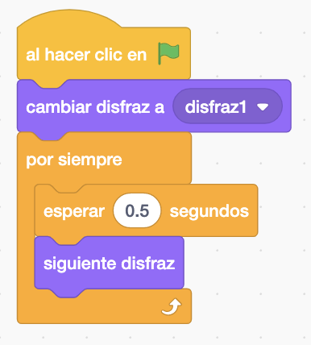
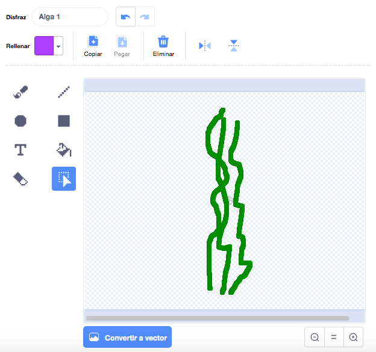
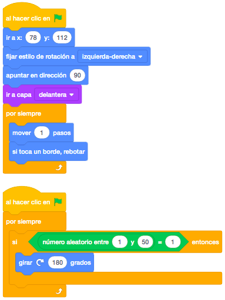
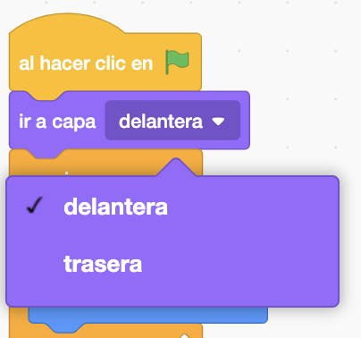
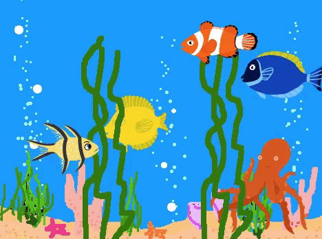

Cogeremos varios peces o animales del mar de la biblioteca de objetos.
También lo cogeremos de la biblioteca de escenarios y será el fondo del mar "Underwater1".
El juego consiste en hacer un acuario en el que los peces pasen por detrás o por de lante de las algas para
simular la profundidad del acuario con la posición por capas.
Tendremos varios peces, cangrejos, pulpos.... y los posicionaremos en nuestro escenario en cualquier zona.
Haremos que se muevan de izquierda a derecha. En lugar de hacer que cambien de dirección cuando lleguen al
final, utilizaremos el bloque "Si Toca un Borde, Rebotar" que lo hace automáticamente.
Es recomendable siempre posicionar cada uno de los personajes (objetos) de nuestro juego al principio de la programación de cada uno de ellos.
Cada pez lo posicionaremos en un lugar de nuestro acuario y le diremos que apunte en una dirección en concreta (unos para un lado y otros para el otro). Además, le daremos una velocidad de movimiento (pasos) diferente a cada uno.
Recordamos que para que no se giren los objetos cuando cambian de dirección, le cambiaremos el "Estilo de Rotación" a "Izquierda/Derecha".

Ahora, para darle mayor realismo, en lugar de que los peces vayan hasta el final continuamente, añadiremos que, de vez en cuando, el pez haga un giro de 180 grados y de la vuelta en cualquier sitio del acuario. Para ello utilizaremos la instrucción "Número Aleatorio".

Dibujaremos dos objetos nuevos que imiten a unas algas del fondo marino y las posicionaremos e nuestro escenario.

Aunque Scratch en una herramienta para hacer juegos en 2D, vamos a simular la profundidad del fondo del mar.
Para ello usaremos el bloque "Ir a Capa", que en algunos objetos pondremos que vaya a la capa delantera y en
otros a la trasera.
El código de los peces quedará de la siguiente forma.

Este código estará igual en todos los peces, salvo la posición inicial de cada pez, su dirección inicial y la
capa a la que les mandaremos.
Por último, como el fondo que hemos elegido tiene tres escenarios distintos, pondremos que vaya cambiando de
fondo cada segundo para darle otro toque más realista.

Y el juego quedaría así.

Para ver el juego terminado pulsa
aquí.
Para descargarte el juego terminado pulsa
aquí.